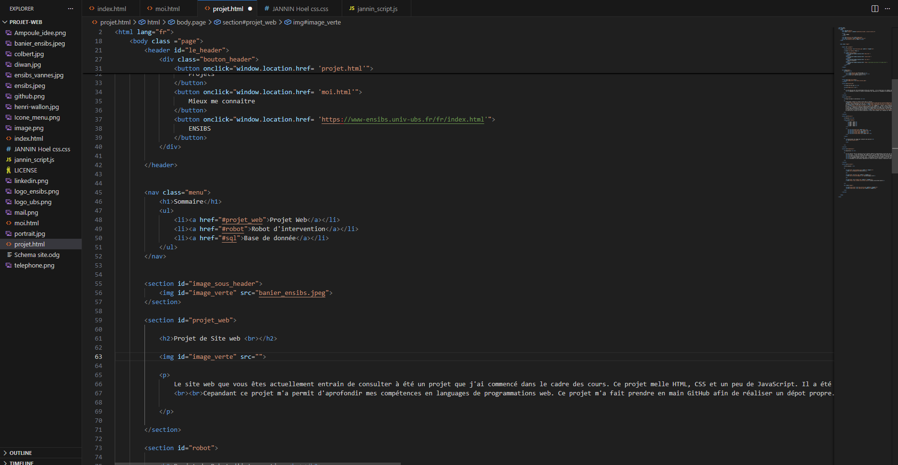
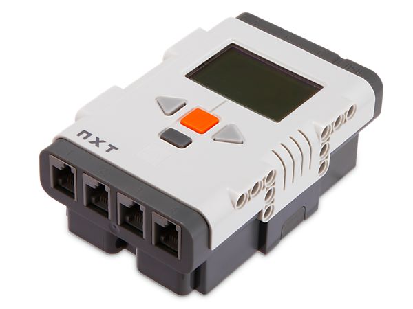
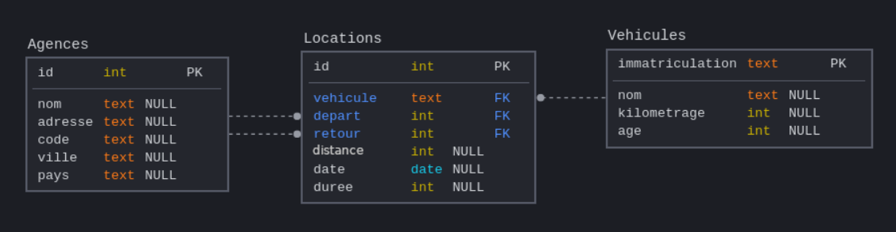

Menu
Menu


Le site web que vous êtes actuellement entrain de consulter à été un projet que j'ai commencé dans le cadre des cours. Ce projet melle HTML, CSS et un peu de JavaScript. Il a été réalisé à 100% manuellement et n'a pas été conçu gr^ce à une IA. Cela explique pourquoi il n'est pas comparable à un site web professionnel.
Cepandant ce projet m'a permit d'aprofondir mes compétences en languages de programmations web. Ce projet m'a fait prendre en main GitHub afin de réaliser un dépot propre. J'ai aussi pu aprendre à sincroniser les fichiers présents sur ma machine avec ceux présents sur le cloud.

Dans le cadre de nos études, nous devons réaliser par groupe de 5 personnes un robot dit "d'intervention". Le robot est composé d'éléments Lego comprenant des pièces Technique, des moteurs et brique NXT. Cela nous permet de découvrir le language NXC.
Son objectif est de ralier le plus rapidement possible une balise lumineuse placé dans la zone d'intervenntion. Il devra se servir de capteurs de lumière et d'un capteur à ultrason afin de parvenir à son but.
Par le biais de ce projet, chaque groupe de la promotion se retrouve en compétition pour créer le robot le plus rapide.
Ce projet est très interessant car il nous permet de fonctionner comme une entreprise le ferait. Lors des séances de projets, on se réparti les tâches en fonctions des spécialités de chacuns comme des experts le feraient dans leurs domaine.
On fait également des petites réunions où on discute de l'avancement de chaques parties et des objectifs à réaliser.
J'aime particulièrement ce projet car il nous permet d'acquérir de nombreuses compétences de manière plus ludique mais également plus réaliste.

Ce projet est un projet personnel de simulation d'une entreprise. L'objectif est de créer une base de donnée en SQL entièrement fonctionnelle pour une fausse agence de location de voiture.
Ce projet personnel m'a permit d'acquérir des compétences en avance sur le programme de mon école. Étant très à l'aise avec le SQL, cela m'a permit de gagner en fluidité.
Ce projet est à mes yeux le plus réaliste de ceux que j'ai réalisé. En effet, il n'y a pas une grande différence entre mon projet et les besoins d'une agence de location.
 07 68 60 15 23
07 68 60 15 23
 hoeljannin@gmail.com
hoeljannin@gmail.com
 linkedin.com/in/hoel-jannin
linkedin.com/in/hoel-jannin